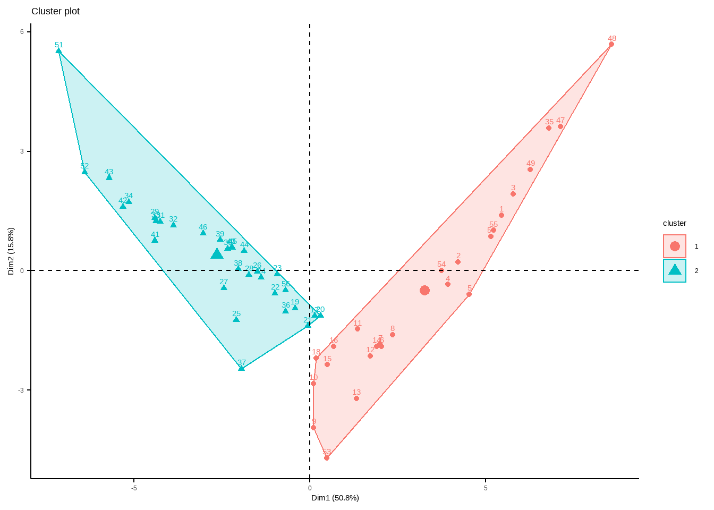

Harmonize samplingÔ∏è üé≤‚ú®
Innovalab - 2022 
üîµ Reading dataset
dataset <- readr::read_csv("data/processed/dataset.csv", col_types = "ccd")
glimpse(dataset)Rows: 56
Columns: 58
$ ubigeo <chr> "1601130022", "1601130004", "1601130070", "1601130005", …
$ village <chr> "PEÑA NEGRA", "PUERTO ALMENDRAS", "UNION PROGRESO", "NIN…
$ pr_2021 <dbl> 3003.523, 3005.561, 3004.709, 3006.072, 3002.893, 3005.3…
$ pr_2010 <dbl> 1711.018, 1710.000, 1711.909, 1708.493, 1707.225, 1703.0…
$ ro_2021 <dbl> 1973.741, 1975.600, 1974.601, 1975.999, 1973.367, 1979.6…
$ ro_2010 <dbl> 777.1561, 776.5314, 777.9957, 775.4281, 773.0794, 774.20…
$ soil_2021 <dbl> 487.1143, 478.9062, 485.8812, 480.6201, 490.1191, 488.32…
$ soil_2010 <dbl> 420.4041, 413.7691, 419.2018, 415.7574, 423.9777, 424.52…
$ tmmx_2021 <dbl> 377.2085, 378.4209, 377.3746, 378.2364, 376.9163, 377.39…
$ tmmx_2010 <dbl> 377.6035, 378.7052, 377.7635, 378.5011, 377.3192, 377.69…
$ tmmn_2021 <dbl> 262.1713, 262.3171, 262.1727, 262.2708, 262.0517, 261.74…
$ tmmn_2010 <dbl> 262.5663, 262.6014, 262.5616, 262.5356, 262.4545, 262.04…
$ etp_2021 <dbl> 31.13105, 31.15949, 30.94147, 31.62333, 31.75194, 32.032…
$ etp_2010 <dbl> 31.43682, 30.75509, 31.27390, 30.86988, 31.78440, 31.330…
$ humidity_2021 <dbl> 0.2184728, 0.2185268, 0.2184848, 0.2185641, 0.2183550, 0…
$ humidity_2010 <dbl> 0.2177948, 0.2178004, 0.2178044, 0.2178143, 0.2176561, 0…
$ pop_2020 <dbl> 2.7544162, 1.1825184, 2.7881847, 0.8219515, 1.8988610, 0…
$ pop_2010 <dbl> 1.5144129, 0.6682649, 1.5185936, 0.6272721, 1.1489897, 0…
$ def_2021 <dbl> 0.8495356, 0.6464356, 0.8529550, 0.8386991, 1.3166787, 0…
$ def_2010 <dbl> 0.7112370, 1.0140521, 0.8757627, 0.7689865, 0.6764592, 0…
$ ghs_2010_mean <dbl> 82.7218007, 55.7917722, 90.3031147, 34.6099785, 37.85072…
$ ghs_2020_mean <dbl> 106.308422, 71.125190, 116.733730, 45.778270, 52.714865,…
$ ln_2021 <dbl> 2.3925664, 1.6253562, 2.5993518, 1.3249509, 1.5268432, 0…
$ ln_2014 <dbl> 1.4091731, 1.1789836, 1.5723015, 0.8608395, 0.7229853, 0…
$ lat <dbl> -3.863147, -3.831725, -3.856809, -3.844760, -3.887690, -…
$ lon <dbl> -73.33678, -73.37802, -73.33872, -73.38588, -73.35142, -…
$ malaria_2010 <dbl> 1, 18, 0, 29, 9, 1, 2, 0, 0, 3, 2, 1, 1, 1, 0, 0, 29, 0,…
$ malaria_2019 <dbl> 4, 35, 0, 88, 64, 0, 2, 0, 0, 4, 1, 0, 0, 2, 0, 0, 0, 0,…
$ poblacion <dbl> 736, 201, 216, 672, 743, 36, 201, 17, 40, 86, 90, 163, 6…
$ vivax <dbl> 0.009510870, 0.109452736, 0.004629630, 0.101190476, 0.14…
$ falciparum <dbl> 0, 0, 0, 0, 0, 0, 0, 0, 0, 0, 0, 0, 0, 0, 0, 0, 0, 0, 0,…
$ malaria <dbl> 0.009510870, 0.109452736, 0.004629630, 0.101190476, 0.14…
$ dengue <dbl> 0.010869565, 0.000000000, 0.000000000, 0.000000000, 0.01…
$ lepto <dbl> 0.004076087, 0.000000000, 0.000000000, 0.000000000, 0.01…
$ pr_mean <dbl> 2357.271, 2357.780, 2358.309, 2357.282, 2355.059, 2354.1…
$ ro_mean <dbl> 1375.449, 1376.066, 1376.298, 1375.714, 1373.223, 1376.9…
$ soil_mean <dbl> 453.7592, 446.3377, 452.5415, 448.1887, 457.0484, 456.42…
$ tmmx_mean <dbl> 377.4060, 378.5630, 377.5691, 378.3688, 377.1178, 377.54…
$ tmmn_mean <dbl> 262.3688, 262.4592, 262.3672, 262.4032, 262.2531, 261.89…
$ etp_mean <dbl> 31.28394, 30.95729, 31.10769, 31.24661, 31.76817, 31.681…
$ humidity_mean <dbl> 0.2181338, 0.2181636, 0.2181446, 0.2181892, 0.2180055, 0…
$ pop_mean <dbl> 2.1344145, 0.9253917, 2.1533892, 0.7246118, 1.5239253, 0…
$ def_mean <dbl> 0.7803863, 0.8302439, 0.8643589, 0.8038428, 0.9965690, 0…
$ ghs_mean <dbl> 94.515111, 63.458481, 103.518422, 40.194124, 45.282793, …
$ ln_mean <dbl> 1.9008698, 1.4021699, 2.0858267, 1.0928952, 1.1249143, 0…
$ malaria_mean <dbl> 1840.0, 5326.5, 0.0, 39312.0, 27119.5, 18.0, 402.0, 0.0,…
$ pr_diff <dbl> 1292.504, 1295.561, 1292.801, 1297.580, 1295.667, 1302.2…
$ ro_diff <dbl> 1196.585, 1199.069, 1196.605, 1200.571, 1200.288, 1205.4…
$ soil_diff <dbl> 66.71017, 65.13707, 66.67937, 64.86267, 66.14146, 63.805…
$ tmmx_diff <dbl> -0.3949886, -0.2843606, -0.3888977, -0.2647657, -0.40281…
$ tmmn_diff <dbl> -0.3949886, -0.2843606, -0.3888977, -0.2647657, -0.40281…
$ etp_diff <dbl> -0.30577669, 0.40440574, -0.33242578, 0.75345370, -0.032…
$ humidity_diff <dbl> 0.0006780, 0.0007264, 0.0006804, 0.0007498, 0.0006989, 0…
$ pop_diff <dbl> 1.2400033, 0.5142535, 1.2695911, 0.1946794, 0.7498713, 0…
$ def_diff <dbl> 0.1382986, -0.3676165, -0.0228077, 0.0697126, 0.6402195,…
$ ghs_diff <dbl> 23.586621, 15.333418, 26.430615, 11.168292, 14.864143, 3…
$ ln_diff <dbl> 0.9833933, 0.4463726, 1.0270503, 0.4641114, 0.8038579, 0…
$ malaria_diff <dbl> 0.004076087, 0.084577114, 0.000000000, 0.087797619, 0.07‚Ķüîµ Exploratory data analysis
variables <- select(dataset, malaria:malaria_diff)
variables %>%
tidyr::pivot_longer(cols = everything(), names_to = "variable") %>%
ggplot(aes(value, variable)) +
geom_violin() +
geom_boxplot(width = 0.1) +
facet_wrap(~variable, ncol = 2, scales = "free")variables_norm <- mutate(variables, across(everything(), scales::rescale))
variables_std <- mutate(variables, across(everything(), ~as.numeric(scale(.x))))üîµ Stratification
Hierarchical clustering
dist_euclidean_norm <- get_dist(variables_norm, method = "euclidean")
dist_pearson_norm <- get_dist(variables_norm, method = "pearson")
dist_spearman_norm <- get_dist(variables_norm, method = "spearman")
dist_euclidean_std <- get_dist(variables_std, method = "euclidean")
dist_pearson_std <- get_dist(variables_std, method = "pearson")
dist_spearman_std <- get_dist(variables_std, method = "spearman")üîµ Heatmaps


üîµ Selection of distance and linkage method
scale_data <- function(data, method = "standardization") {
if (method == "standardization") {
data_scaled <- mutate(data, across(everything(), ~as.numeric(scale(.x))))
}
if (method == "normalization") {
data_scaled <- mutate(data, across(everything(), scales::rescale))
}
data_scaled
}scaling_method <- c("standardization", "normalization")
dist_method <- c("euclidean", "pearson", "spearman")
linkage_method <- c("average", "single", "complete", "ward", "weighted")design <- tidyr::expand_grid(scaling_method, dist_method, linkage_method, variables)agglomerative_coeff <- design %>%
tidyr::nest(data = -c(scaling_method, dist_method, linkage_method)) %>%
mutate(
scaling = map2(data, scaling_method, ~scale_data(.x, method = .y)),
dist_mat = map2(scaling, dist_method, ~get_dist(.x, method = .y)),
tree = map2(dist_mat, linkage_method, ~agnes(.x, method = .y)),
ac = map(tree, ~.x$ac)
) %>%
tidyr::unnest(ac) %>%
arrange(-ac)agglomerative_coeff# A tibble: 30 × 8
scaling_method dist_method linkage…¹ data scaling dist_…² tree ac
<chr> <chr> <chr> <list> <list> <list> <list> <dbl>
1 standardization spearman ward <tibble> <tibble> <dist> <agnes> 0.979
2 normalization pearson ward <tibble> <tibble> <dist> <agnes> 0.977
3 standardization pearson ward <tibble> <tibble> <dist> <agnes> 0.973
4 normalization spearman ward <tibble> <tibble> <dist> <agnes> 0.960
5 normalization pearson complete <tibble> <tibble> <dist> <agnes> 0.959
6 normalization pearson weighted <tibble> <tibble> <dist> <agnes> 0.945
7 normalization euclidean ward <tibble> <tibble> <dist> <agnes> 0.931
8 standardization spearman complete <tibble> <tibble> <dist> <agnes> 0.925
9 normalization spearman weighted <tibble> <tibble> <dist> <agnes> 0.913
10 normalization spearman complete <tibble> <tibble> <dist> <agnes> 0.913
# … with 20 more rows, and abbreviated variable names ¹​linkage_method,
# ²​dist_mat

üîµ Selection of number of clusters


2 clusters
clustering_2 <- hcut(
variables_std, k = 2, hc_func = "agnes", hc_method = "ward.D2",
hc_metric = "spearman"
)
cluster size ave.sil.width
1 1 25 0.50
2 2 31 0.483 clusters
clustering_3 <- hcut(
variables_std, k = 3, hc_func = "agnes", hc_method = "ward.D2",
hc_metric = "spearman"
)
cluster size ave.sil.width
1 1 25 0.38
2 2 13 0.27
3 3 18 0.63

4 clusters
clustering_4 <- hcut(
variables_std, k = 4, hc_func = "agnes", hc_method = "ward.D2",
hc_metric = "spearman"
) cluster size ave.sil.width
1 1 9 0.72
2 2 16 0.24
3 3 13 0.23
4 4 18 0.63üîµ Maps
dataset_clustering <- dataset %>%
mutate(
hc_group_2 = as.factor(clustering_2$cluster),
hc_group_3 = as.factor(clustering_3$cluster),
hc_group_4 = as.factor(clustering_4$cluster)
)üîµ Principal components analysis
pca <- PCA(variables_std, graph = FALSE)fviz_screeplot(pca)
fviz_contrib(pca, choice = "var", axes = 1, top = 10)
fviz_contrib(pca, choice = "var", axes = 2, top = 10)
üîµ Coordinate plane
fviz_pca_ind(pca)
üîµ Scoring
pca_results <- get_pca_ind(pca)
scores <- pca_results$coorddataset_pca <- dataset_clustering %>%
mutate(pca_score = scores[, 1]) %>%
mutate(
pca_group_2 = cut(
pca_score, breaks = quantile(pca_score, c(0, .5, 1)),
labels = as.character(rev(1:2)),
include.lowest = TRUE
),
pca_group_3 = cut(
pca_score, breaks = quantile(pca_score, c(0, .33, .66, 1)),
labels = as.character(rev(1:3)),
include.lowest = TRUE
),
pca_group_4 = cut(
pca_score, breaks = quantile(pca_score, c(0, .25, .5, .75, 1)),
labels = as.character(rev(1:4)),
include.lowest = TRUE
)
) %>%
mutate(across(pca_group_2:pca_group_4, forcats::fct_rev))üîµ Maps
paleta <- colorFactor(palette = "viridis",domain = dataset_pca$pca_group_2)
dataset_pca %>%
st_as_sf(coords = c("lon", "lat"),crs=4326) %>%
leaflet() %>%
addTiles(group = "OpenStreetMap") %>%
addProviderTiles(provider = providers$CartoDB,group = "CartoDB") %>%
addProviderTiles(provider = providers$Esri.WorldImagery,group = "Satelital") %>%
addCircleMarkers(
popup = dataset_pca$village,
color = ~paleta(pca_group_2),
opacity = 1,
radius = 0.1,
fillOpacity = 0.5
)%>%
addLayersControl(
baseGroups = c("CartoDB","OpenStreetMap","Satelital")
) %>%
addLegend(
title = "Legend",
pal = paleta,
values = ~pca_group_2,
opacity = 1,
position = "bottomright"
)paleta <- colorFactor(palette = "viridis",domain = dataset_pca$pca_group_3)
dataset_pca %>%
st_as_sf(coords = c("lon", "lat"),crs=4326) %>%
leaflet() %>%
addTiles(group = "OpenStreetMap") %>%
addProviderTiles(provider = providers$CartoDB,group = "CartoDB") %>%
addProviderTiles(provider = providers$Esri.WorldImagery,group = "Satelital") %>%
addCircleMarkers(
popup = dataset_pca$village,
color = ~paleta(pca_group_3),
opacity = 1,
radius = 0.1,
fillOpacity = 0.5
)%>%
addLayersControl(
baseGroups = c("CartoDB","OpenStreetMap","Satelital")
) %>%
addLegend(
title = "Legend",
pal = paleta,
values = ~pca_group_3,
opacity = 1,
position = "bottomright"
)paleta <- colorFactor(palette = "viridis",domain = dataset_pca$pca_group_4)
dataset_pca %>%
st_as_sf(coords = c("lon", "lat"),crs=4326) %>%
leaflet() %>%
addTiles(group = "OpenStreetMap") %>%
addProviderTiles(provider = providers$CartoDB,group = "CartoDB") %>%
addProviderTiles(provider = providers$Esri.WorldImagery,group = "Satelital") %>%
addCircleMarkers(
popup = dataset_pca$village,
color = ~paleta(pca_group_4),
opacity = 1,
radius = 0.1,
fillOpacity = 0.5
)%>%
addLayersControl(
baseGroups = c("CartoDB","OpenStreetMap","Satelital")
) %>%
addLegend(
title = "Legend",
pal = paleta,
values = ~pca_group_4,
opacity = 1,
position = "bottomright"
)üîµComparison
2 groups
dataset_pca %>%
conf_mat(hc_group_2, pca_group_2, dnn = c("PCA", "HC")) HC
PCA 1 2
1 25 3
2 0 28dataset_pca %>%
kap(hc_group_2, pca_group_2)# A tibble: 1 × 3
.metric .estimator .estimate
<chr> <chr> <dbl>
1 kap binary 0.8933 groups
dataset_pca %>%
conf_mat(hc_group_3, pca_group_3, dnn = c("PCA", "HC")) HC
PCA 1 2 3
1 19 0 0
2 6 10 2
3 0 3 16dataset_pca %>%
kap(hc_group_3, pca_group_3)# A tibble: 1 × 3
.metric .estimator .estimate
<chr> <chr> <dbl>
1 kap multiclass 0.7054 groups
dataset_pca %>%
conf_mat(hc_group_4, pca_group_4, dnn = c("PCA", "HC")) HC
PCA 1 2 3 4
1 9 5 0 0
2 0 11 3 0
3 0 0 9 5
4 0 0 1 13dataset_pca %>%
kap(hc_group_4, pca_group_4)# A tibble: 1 × 3
.metric .estimator .estimate
<chr> <chr> <dbl>
1 kap multiclass 0.667